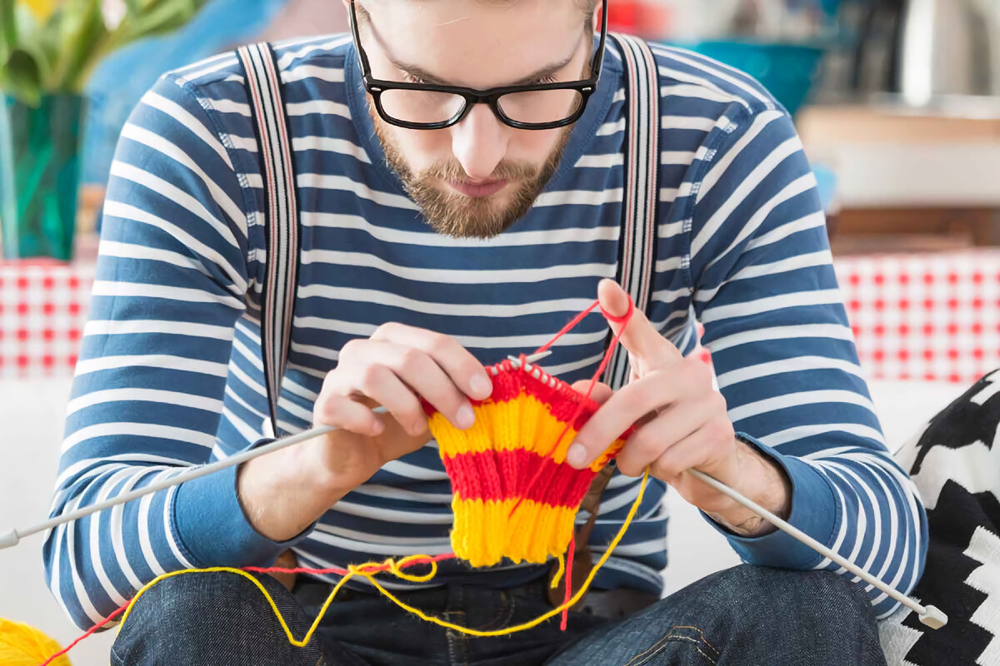

Хобби бывают разные
По данным исследователей, около 50 % россиян вообще не имеют хобби. У другой половины хобби есть, причем у 16 % из них есть даже не одно увлечение, а несколько. Наиболее популярны сегодня рукоделие (22 %) и охота с рыбалкой (21 %). Естественно, что первое свойственно в основном женщинам, а второе — мужчинам. Кроме того, социологи исследовательского холдинга «Ромир» отмечают, что оба пола увлекаются книгами (20 %), затем идут цветоводство (16 %) и спорт (13 %), домашние животные (10 %), путешествия (6 %) и коллекционирование (5 %). 3 % наших соотечественников считают своим увлечением «сидение» в интернете, и количество их с каждым годом растет.
Совмещать хобби с профессией?
По мнению психологов, в данном случае все очень индивидуально. Для кого-то подобное совмещение — благо, а для кого-то — вред. Ведь в течение жизни человеку желательно постоянно переключаться с одного вида деятельности на другой — именно тогда он развивается гармонично.
Кроме того, существует такое понятие, как «профессиональная деструкция», которая как раз и вызвана многолетним выполнением одной и той же работы. Поэтому, если и после трудового дня человек не будет менять свою деятельность, а хобби будет продолжением работы, положение дел может только усугубиться. А вот интересное и не связанное с основным занятием хобби позволяет человеку сохранить внутреннюю гармонию и продолжить разносторонне развиваться.
Конечно, специалисты советуют выбирать ту профессию, которая нравится. Но рекомендуют оставлять хобби за ее рамками, чтобы не увеличивать опасность деградации в однообразной деятельности. Очень часто из этой ограниченности вырастает так называемый «трудоголизм».
По мнению психологов, трудолюбие становится опасным, когда работа заменяет все виды активности. Если человек ни на минуту не может расслабиться и получить удовольствие от общения с семьей, прогулки на природе или хорошей книжки — это тревожный симптом. В данном случае прямо-таки необходимо выбрать хобби, меньше всего похожее на работу. Например, если на работе вы проводите весь день за компьютером, заведите собаку или займитесь спортом. А еще лучше вспомните свои детские или школьные увлечения и попробуйте их возобновить.
Мнения специалистов
Голландский профессор Манфред Кетс де Врис в своей книге «Уравнение счастья» пишет, что именно хобби, не связанные с профессиональной деятельностью, позволяют задействовать те способности, те части головного мозга, которые не используются во время работы. Человек становится более инновационным и эффективным как в работе, так и в личных отношениях.
Интересна также точка зрения специалистов Центра тестирования при МГУ «Гуманитарные технологии» по этому поводу. Директор центра, психолог Алексей Серебряков считает, что, проводя параллели между увлечениями и работой, можно выделить два направления. Одна категория людей ищет в увлечениях то, чего им не хватает на работе, а вторая, напротив, выбирает увлечения, которые по своей сути близки их роду деятельности. Последнюю категорию Алексей Серебряков характеризует как людей с предпринимательским складом характера. Причем у большинства предпринимательских хобби есть еще один полезный побочный эффект: тренинговый. Шахматы, например, тренируют память и умение просчитывать свои действия на несколько ходов вперед, а экстремальные виды спорта развивают навык быстро принимать решение в критической обстановке.
По мнению психотерапевта Татьяны Колошиной из Института психотерапии и клинической психологии, хобби существуют для того, чтобы переключать мозги. И, в отличие от нетворческих физических нагрузок (например, мытья полов), которые делаются «на автопилоте» и обычно не избавляют от будничных мыслей, творческие увлечения заставляют человека думать в другом направлении: какой будет его работа, как лучше ее сделать и так далее. Татьяна Колошина считает, что каждому человеку сегодня необходимо именно творчество.
Как же быть?
Итак, наши увлечения обычно тем или иным способом помогают в работе. Причем это касается всех: и специлистов, и руководителей, и предпринимателей. Так что, если вы относитесь к тем 50 % россиян, которые пока еще не имеют хобби, попробуйти найти занятие по душе.
И учтите: психологи советуют выбирать хобби, которые помогают компенсировать слабости. Например, нетерпеливым людям, которые с трудом доводят что-либо до конца, будет полезно дело, требующее усидчивости и терпения — рыбалка, вязание или что-то в этом духе. Но не забывайте главное: выбранное занятие должно доставлять человеку удовольствие. Тогда это будет настоящее хобби, которое поможет вам в работе и карьере.